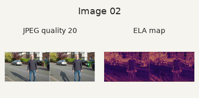
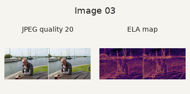
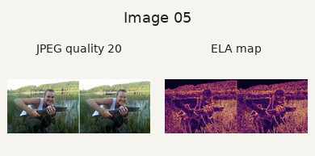
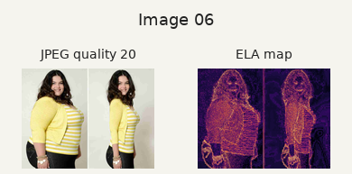

01 · 596fa37556152c22b45c6eb2.avif
AVIF · 1920 × 640 · 3 views · 8 qualities
Open full reportIREMIMG · ANALYSIS OUTPUTS
Each file has whole, left, and right views with JPEG copies, ELA maps, overlays, and measurements. Quality-20 files are also grouped separately.
How to read ELA ELA shows pixel differences after JPEG recompression. Two inputs are AVIF, two WebP, and two JPEG. For AVIF and WebP the values measure differences from conversion to JPEG. The left and right labels describe position in the collage.
Open a report, choose the whole / left / right view, and choose one of eight qualities: 5, 10, 20, 40, 60, 80, 90, 95. Measurements use the original dimensions.
AVIF · 1920 × 640 · 3 views · 8 qualities
Open full report
AVIF · 1920 × 641 · 3 views · 8 qualities
Open full report
WEBP · 1024 × 370 · 3 views · 8 qualities
Open full report
JPEG · 1280 × 720 · 3 views · 8 qualities
Open full report
WEBP · 1024 × 385 · 3 views · 8 qualities
Open full report
JPEG · 880 × 663 · 3 views · 8 qualities
Open full reportThe panels are recompressed separately. Their dimensions, contents, and JPEG block boundaries can differ.
| File | Whole | Left panel | Right panel |
|---|---|---|---|
| 01 · 596fa37556152c22b45c6eb2.avif | 6.064 | 6.058 | 6.071 |
| 02 · 596fa37556152c22b45c6eb3.avif | 5.445 | 5.479 | 5.413 |
| 03 · kh-composite-man-2.webp | 5.281 | 5.196 | 5.368 |
| 04 · maxresdefault.jpg | 6.715 | 7.624 | 5.808 |
| 05 · nintchdbpict000339476175.webp | 6.898 | 6.918 | 6.881 |
| 06 · plus-size-celebrity-photoshopped-thinner-project-harpoon-thinnerbeauty-13.jpg | 4.861 | 5.460 | 4.262 |
The original control and render PNGs were converted to full-size quality-20 JPEGs. ELA and overlay previews were resized to a maximum edge of 1,280 pixels after analysis.
| Sample | Control · Q20 | Render · Q20 | Difference maps |
|---|---|---|---|
| duyuru 2160 × 3840 | Control JPEG 20 | Render JPEG 20 | Control ELA · Render ELA Control overlay · Render overlay |
| karga 4284 × 5712 | Control JPEG 20 | Render JPEG 20 | Control ELA · Render ELA Control overlay · Render overlay |
| error 387 × 130 | Control JPEG 20 | Render JPEG 20 | Control ELA · Render ELA Control overlay · Render overlay |
JPEG folders contain the recompressed copies. ELA folders share a 0–20 scale. The overlay blends the map with the input at 55% opacity. Each view also has a histogram and edge map.
The reports record mean, median, P90, P95, P99, maximum difference, channel RMSE, display clipping, JPEG file size, and runtime. Runtime covers encoding, decoding, and difference calculation. The timed step excludes file loading, statistics, plots, and output writes.